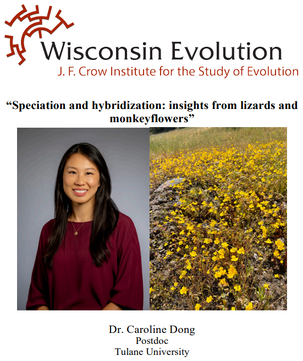
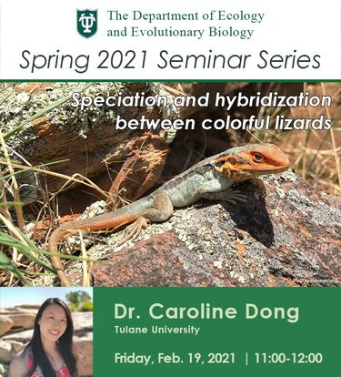
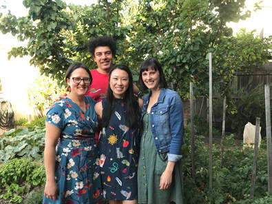

Selected highlights
2023 // I received a Wisconsin Evolution Early Career Scientist Seminar Award and presented a seminar at at UW-Madison. I'm honored and I had a great time!

2022 // We were lucky to have the opportunity to stay at the beautiful Yosemite Field Station during field experiments! Our research was featured on their social media pages.

2021 // I wrote a short blog for the British Ecological Society about my Mimulus research in the Ferris Lab and my interest in 'cryptic' floral coloration: https://appliedecologistsblog.com/2021/12/13/cryptic-floral-colouration-beyond-human-vision/

2021 // I joined the Ecology and Evolutionary Biology Department at Tulane University as a postdoc with Dr. Kathleen Ferris and shared my PhD research during a departmental seminar.

2020 // Woohoo! I graduated with my PhD from The University of Melbourne. Many thanks to my wonderful advisors: Prof. Devi Stuart-Fox, Dr. Adnan Moussalli, and Dr. Claire McLean.

2019 // Amanda, Laura, and I participated in "Nocturnal" and National Science Week at the Melbourne Museum by discussing the perception and function of animal coloration! We used exciting museum specimens of birds and insects in our exhibit.

2018 // My PhD research on tawny dragons was featured on SCOPE, an Australian children’s science show produced in association with the CSIRO. Check out Season 4 Episode 52: Reptiles and Amphibians.